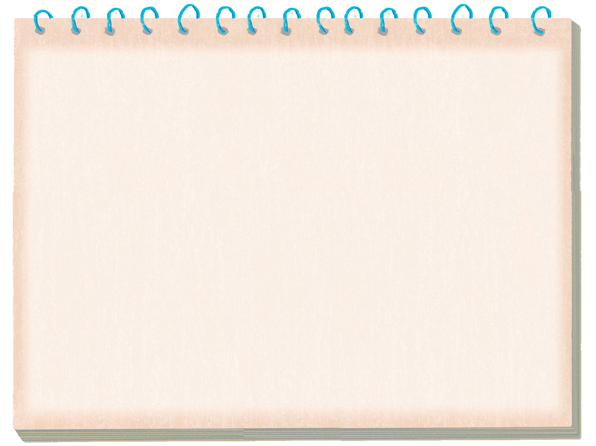
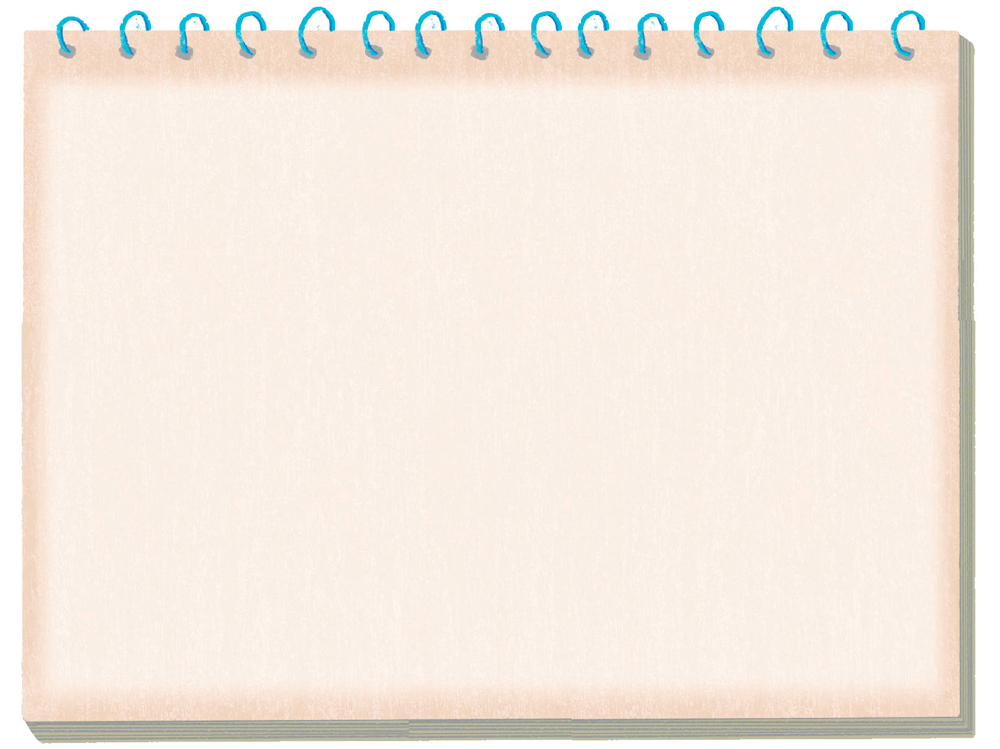

- 물음 1
- 물음 2
-
-

윤한이의 고민
우리 반 체육 시간에 달리기 시합을 진행했고 마지막까지 남은 아리와 이준이가 결승선을 향해 힘차게 달리기 시작했다.
‘아리 몸이 아주 조금 먼저 앞으로 들어왔구나.’ 나는 아리가 결승선에 조금 더 빨리 들어온 것을 보았고, 내 단짝 이준이가 진 것이 너무 아쉬웠다.
“아리, 승!”
승부욕이 강한 이준이는 자신이 아리와 똑같이 들어온 것 같다며 재시합을 요청했지만, 선생님의 판정은 바뀌지 않았다.
-
“윤한아, 너는 내 말 믿지? 아리는 나랑 동시에 들어왔어. 선생님이 보고 계셨던 위치가 나에게 불리했던 거야. 너도 그렇게 생각하지?”
이준이의 질문에 나는 잠시 머뭇거리다가 대답했다.
“이준아. 너는 그렇게 생각했을 수 있겠다. 정말 간발의 차이였거든. 이번에는 선생님 말씀대로 아리가 조금 빨리 들어오긴 했더라. 너도 충분히 잘 뛰었어. 다음 시합에서 한 번 더 도전해 볼까?
”
-

-
추가 질문
억울하고 속상해하는 이준이에게 정직하게 말하면 이준이가 더 화날 수도 있고 이준이와의 사이가 안 좋아질 것이라는 생각과, 이준이의 말에 맞장구를 치면 다른 친구들과 선생님, 나 자신에게 거짓을 말하고 진실을 덮는 일이라는 생각이 동시에 들었기 때문입니다.